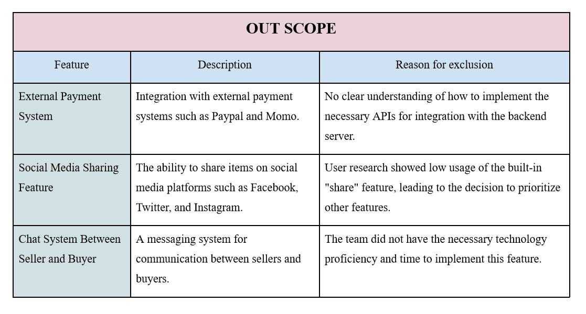
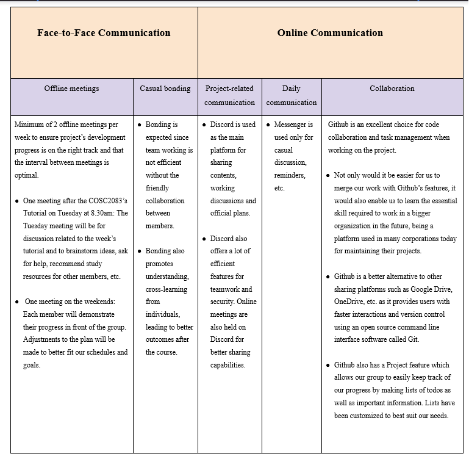

Aims
EFly’s ultimate aim is to be a fully functional website that allows students to buy and sell merchandise from RMIT with the most ease and convenience. We want to develop a platform with powerful features that will satisfy any user regardless of whether they want to search, buy or put items up for sale. Ultimately, EFly aims to be a reliable, convenient marketplace that can attract a stable user base of RMIT students.
This aim could be divided into three goals. The goals are sorted in a descending order of importance so as to give an overview over our priorities in the case of limited resources. In other words, the higher up a goal, the more crucial it is to the aim of the project.
However, only by achieving all of these fundamental goals can EFly be truly considered a finished product.
-
Flexibility for our users: As the core idea of the website, EFly aims to offer buyers many options to acquire their favorite merchandise. They can either buy from an official store or join auctions and bid for what they want in the market.
Of course, to facilitate the shopping process, basic functions such as search, cart, wishlist, etc. will be expected.
Integrating these two features gives more autonomy to the buyers, as well as sellers of auction items. It makes it easier for users to conveniently find and get what they are looking for. It is the most fundamental function that EFly strives to serve. -
Ensure security and reliability of the website: EFly will strictly enforce authentication, so that only verified students will be able to register. This is to prevent unwanted behaviors, for instance, for the auction page to not get populated with spam.
Besides security, EFly will ensure a safe, transparent shipping and transaction process, as well as offer a refund policy. EFly will be designed to have good customer service, so as to maintain our reputation as a trusted marketplace for all things RMIT. All in all, a safe and pleasant user experience is of utmost importance to us. - Other up-to-date, advanced tools and features: Finally, EFly aims to add many other powerful features that will boost the end user experience. For instance, analytics will be provided to give users insight into their shopping behaviors. Live auctions, social media integration, advanced search, etc. will be offered as well. The user interface will be polished, and the site will be optimized for search engines in order to maximize visibility. These features will be constantly updated and maintained to keep its users engaged. In addition, we will always look out for user reviews so that the functionalities can be optimized to best suit our customer’s needs.
Plans and Progress
- How it began
- How it progressed
- Review product, finalize parts.
- Explore hosting options.
- Conduct testing on the website.
- Optimize the codes to maximize end users’ experience.
From the beginning of the semester (week 2, after we formed a group), our group was given the task of choosing an IT project topic to implement this idea to the best of our ability within the time given between the Proposal and Final Report.
Our first step in week 2 was to meet up and discuss our suggestions for this project. It also gave us a chance to get to know each other, since we were not acquainted before forming the group. The first meeting served as both an ice-breaker and an opportunity to gather as many ideas as possible so we can later consider each option that was presented.
After thorough consideration, taking into account each member’s IT interest and our experience with certain technologies, we finally decided on developing EFly - an e-commerce website, inspired by the website EBay.
Notably, at first, we did not think of the specific demographic for the website - it was admittedly our first oversight, and the idea of EFly being used for RMIT merchandise only came to us later on in the following weeks. At this point in time, we only intended for EFly to be a generic marketplace that anyone can join, and the shop page would have various types of items for sale - there was not much consideration over our targeted user base. This initial idea of the website was put in both the Early Feedback Activity in week 3 and the Proposal by the end of week 5.
After deciding on a topic, the team discussed the most important points in order to ensure efficient group work, which includes communication methods and expectations from each member every week.
Regarding the technical part of actually building the website, since we do not have much experience working on an actual product at the time, we agreed on making a rough initial plan first based on what we researched about the requirements and technology used to build a functional website. To put it simply, we would study the necessary languages/frameworks in the first 6 weeks, and the final half of the semester will be dedicated to developing EFly as much as possible before the Final Report. This plan was put forward by the end of week 3 and included in the Timetable section of our Project Proposal.
As we recognize that we do not have the knowledge required to complete the product at the time, a large portion of our limited time will have to be spent on studying. Besides, having other personal and academic responsibilities, we had acknowledged the difficulty of this task from the beginning. For that reason, we had all agreed on our priorities: we would focus on the given assignments in the course first and foremost, and working towards developing the website would be greatly encouraged but not strictly compulsory, since the workload would simply be excessive, which might lead to burnout as well as reduced productivity. We consider this a necessary compromise to maximize our efficiency and move the project forward in a healthy, reasonable way.
With the necessary group requirements, priorities, and roles clearly agreed on, we begin writing up the proposal as well as complete the tasks given in our first plan.
In the first half of the semester, our effort was focused on researching and brainstorming ideas. The reason was that creating an e-commerce website would require careful research on our part.
Being inexperienced in web development, if we want to build a website, it is crucial to learn how things work behind the scenes, how the different components work together to form the interface that is familiar to the average user. This includes understanding different languages, such as HTML and CSS, the workings of a database, as well as the frameworks. Additionally, understanding security measures to prevent breaches and malicious attacks is also important.
Besides having to learn the tools required, there is also a need to learn about other equally important topics. To be more specific, we had found our concept of EFly as it was in the proposal did not take into consideration the current market, especially the target audience.
This was when the idea of making EFly a website for RMIT merchandise was put forward. By week 6, we had revised and changed our topic to head towards a more specific aim.
In hindsight, we actually have done well in achieving the tasks listed in our initial plan. Up to the end of week 6, we were progressing steadily, learning by ourselves many subjects related to web development, e-commerce, and its related fields, such as big data or cyber security.
Below is the first half of the plan in question, in which all the tasks have been successfully achieved up to this point in time.
This means that we did better than expected with making the plan, at least, up to the first half of the timeline. No significant changes had to be made to the plan by the time, and we were getting a better grasp on the necessary knowledge such as Git, Python, and Django.
Moreover, we had managed to put in more work than expected into building the project. For example, after the end of week 6, we have made a mockup design of the website. A video showcasing it can be found on Youtube. This was done to give us a clearer overview of what we were envisioning.
The real challenge began from week 7 onwards, when we had got a better understanding of the tools required. Moving from the initial concept to the actual product is a daunting task, and we had expected for our progress to be impeded by multiple roadblocks.
As mentioned, the first difficulty we faced was lack of knowledge. Although each of us had gained basic knowledge regarding web development after doing our research, we realized that acquiring the expertise required to make a fully functional website would be a difficult learning curve.
The second difficulty was the lack of time. After the initial phase of research, the time limit of around 5 weeks before the Final Report was unfortunately not enough for us to fully implement our idea. As each member has to balance other life responsibilities and commitments, investing our full time into making the website would likely be unfeasible. Without adequate time, it is undeniably difficult to complete the necessary features of the project and ensure they are of high standard. Although unfortunate, this is another compromise that we have to make during the making of the project.
In short, it would not be likely that a website as we had envisioned could be made before the final report. This means that our last half of the initial plan would have to be revised almost completely. For reference, below is the part in question.
Since this plan was made when we were almost completely unfamiliar with web development, we were only able to make an estimate of the details regarding the website implementation phase. As of week 7, having gained enough knowledge to see things in a clearer light, we quickly realized that each week’s tasks would not be completely achievable, since we underestimated the time it would take for the implementation. This is due to our miscalculations, however, we believe it was unavoidable considering our situation.
However, this did not mean that we would drop the project. We agreed on continuing developing as much of EFly as possible with the time constraints, and a Github repository was created so that we could begin collaborating.
The commit history reflects our progress in building the website. It can be viewed in our Github repository.
It can be seen that we had begun working on the website from December 6th to January 12th, which equals roughly one month. We began by creating a diagram for the website (diagram.drawio) which can be viewed on https://app.diagrams.net/. It serves as a way to keep track of our progress.
Each member was given a portion of the website’s backend to work on, then we would merge the test branches together when it is approved by our lead developer. Over the course of the month, we would make sure to put as much work as possible into EFly.
By the time of the final report, we have managed to code a part of the website’s backend. This roughly includes the following: User systems, cart page, email functions, and product models. Some of these functions are not finalized and will need to be adjusted over time.
Unfortunately, the time constraints did not allow us to finish the backend as well as implement a frontend that would resemble our mockup demo.
In retrospect, if we had the necessary skills before the course, this project would have been more complete, however, we do not feel that what we had managed to do was a waste, since our efforts were well rewarded. Our skills have certainly gotten better as we challenge ourselves with a practical project. Furthermore, our planning and teamwork skills have also improved greatly.
Finally, after this course, we will still continue building EFly and adding to it if possible. It would be a delight if someday, EFly could become an actual, functional website.
If we are to continue working on EFly, we would estimate another 3 months to complete the basic implementation of the website. The new plan would closely resemble the final half of our initial timetable, however, the time given between each timestamp will most likely be increased from one week to around 2 - 3 weeks, to better account for the complexities of each feature’s implementations.
The table below details our new plan for the future.
| Quang | Ha | Khang | |
|---|---|---|---|
| Week 1 + 2 | Implement auction listing functions. | Implement bidding functions. | Implement item listing pages. |
| Week 3 + 4 | Implement a category system. | Implement search by name function. | Implement guest functions. |
| Week 5 + 6 | Implement product details system. | Implement user checkout and address details page. | Implement send as gift functions. |
| Week 7 + 8 |
|
||
| Week 9 onwards |
|
By the end of this plan, we will have achieved our first and most important goal out of the three goals we have defined in the Aims section.
Although we currently have no definitive plans after this stage, most likely, we will continue researching to see if the next two goals can be achieved and will update our timetable when a decision is made. As of now, we do not have the ability to make an informed decision just yet.
Roles
Below is a table that gives a brief overview of our roles in the project.
| Quang | Ha | Khang |
|---|---|---|
Manager, Developer:
|
Developer, Designer:
|
Lead Developer:
|
In regards to the EFly project, we have to account for the fact that our group only has three members, which is the minimum for this course’s requirement. This means that we have limited choices over how we allocate tasks to the members. To best optimize what we can do, we have defined clear roles for the project. However, should anyone come across any trouble, they can freely ask for help among the group, so flexibility is not compromised.
Besides building the website, writing up the report is an important part during this course. As every member can contribute to the reports in their unique way, we have agreed that limiting the people working on reports will not be a good decision. That is why, for the written assignments, everyone will be contributing, so that the reports best reflect our group as a whole’s views and opinions.
Scope and Limits
In this project, the team aimed to develop a website for RMIT students to buy and auction limited items and merchandise. The details of the intended scope of the project can be found in the "In Scope" table below.
We intend to continue developing and have these features completed in the future.
However, there were also several limitations to the project due to various constraints. The "Out scope" table below provides more information on these features that would not be included in the website, at least in the current phase, along with an explanation of the reasons for their exclusion. Although EFly would certainly benefit from having these features, more research/resources would be needed to start considering implementing these features in the website.
Tools and Technologies
In order to develop and maintain our e-commerce website, we utilized the following tools and technologies:
- Backend: Django and Django REST Framework are used to implement the server-side logic of our application. For the database, sqlite3 is used for the project.
- Frontend: HTML, CSS, Javascript are needed for an intuitive interface and interactive website. The Next.js framework is also considered for frontend development.
- Code management: We utilized a Git repository hosted on GitHub to store and manage our code. This allowed us to easily collaborate on the project and track the changes made to our code.
- Mockup, prototype design: Canva is used to create designs for the website, including the mockup video.
Overall, our team was able to effectively utilize the tools and technologies at our disposal to develop and maintain our e-commerce website, despite some challenges along the way.
Testing
To ensure that our e-commerce website meets the required specifications and functions as intended, we will implement a thorough testing process.
For the backend, we will use a combination of automated and manual testing techniques. We will create unit tests for each major component of the system, using tools such as Pytest and Django's built-in testing framework. These tests will validate the individual components of the system and ensure that they are working correctly. We will also create integration tests to verify the interactions between the different components of the system and ensure that they are functioning correctly together.
In addition to these unit and integration tests, we will use automated testing tools such as Postman to perform API testing and load testing on the backend. These tests will verify that the API endpoints are functioning correctly and that the system can handle the expected traffic and usage. We will also manually test the backend by manually making requests to the API and verifying the results.
For the frontend, we will use manual testing to verify the functionality and usability of the user interface. We will test the frontend on multiple browsers and devices to ensure compatibility and we will manually test all major features of the frontend to ensure that they are working correctly.
We will also conduct user testing to gather feedback from real users and identify any issues or areas for improvement. To find test users, we will reach out to our network of contacts and use online resources such as forums, social medias and user testing platforms. We plan to test with a minimum of 50 users from the RMIT community, representing a diverse range of backgrounds and experiences. We will ask the test users to complete various tasks on the website and gather their feedback on the usability and functionality of the site.
In addition to these efforts, we will regularly review and analyze usage data and error logs to identify any issues that may not have been caught during testing. We will fix any issues that we identify and retest to ensure that the system is functioning correctly. We will consider our project a success when it is able to meet all functional and performance requirements, and receive positive feedback from users.
Risks
As with any project, there are a number of potential risks that we need to consider. Here are the risks that we have identified for our e-commerce website:
- Lack of technical knowledge: Members have to do research and acquire the skills necessary, which will take considerable time since web development covers a lot of knowledge. For example, while we have experience with technologies such as Django and Django REST Framework, we have limited experience with Next.js, which we planned to use for the frontend development of our website. This could potentially lead to challenges and delays in development if we encounter issues that we are unable to easily solve.
- Competition from other e-commerce websites: Our website will be entering a crowded and competitive market, and there is a risk that we may face difficulty in attracting and retaining customers. This could be due to a variety of factors such as the quality and variety of products offered, the user experience of our website, and the reputation of our brand.
- Security risks: Building an ecommerce website from scratch is a monumental task realistically. Most businesses tend to levitate towards big, established platforms such as Shopify, Woocommerce etc. The reason for this mostly boils down to the sheer number of potential security risks involved when it comes to building a real website. For example, vulnerable shopping websites may easily expose its users to identity theft. “According to the Identity Fraud Study by Javelin Strategy & Research, identity fraud affected 13.1 million consumers in 2013. The total dollar losses from identity theft increased to $18 billion (Javelin 2014)” [3, p. 66].
- Code collaboration: As web development consists of many aspects to cover, we will need to collaborate efficiently using Github. Code conflicts might happen if parts are not synchronized properly.
We will need to carefully monitor and manage these risks throughout the project to ensure that they do not negatively impact the progress of our website.
Group processes and communications
The table below is a detailed description of our communication methods. As clear and continuous communication is crucial to finishing the project, we have come up with basic terms to enhance our group work experience.
We have identified the risks regarding communication breakdown and came up with solutions for each case.
- Group member(s) do not respond: The group has assigned most members in the same class and set up compulsory meetings. Monetary punishment serves well as a means to ensure commitment in the worst case scenario. The group has decided on a fine of 100.000 VND everytime a member is not responding by all of these 3 methods: messenger text, email and phone call.
- Internet Breakdown: Gathering will be held at the RMIT’s main gate precisely at 11AM on the first Tuesday should this happen.